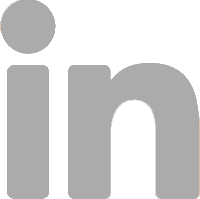
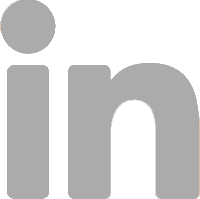

Auxiliar gerencial
Auxiliar de gerencia em vendas no setor de varejo. Foco em habilidades de trabalho em equipe, comunicação e negociação.
Portifólio.
Faço tecnólogo em Análise e Desenvolvimento de Sistemas, e ainda estudo nas mais conhecidas plataformas como
Alura, Udemy, Curso em Vídeo, e muito mais. Conheço HTML, CSS, JavaScript, SEO, Bootstrap, Metodologias Ágeis e estou me aprofundando
em TypeScript e React.
Em constante desenvolvimento
Linguagem de marcação
Linguagem de estilização
Linguagem de Programação
Linguagem de Programação
Biblioteca de JavaScript
Biblioteca para aplicações Web
É possível acessar o repositório desses e de outros projetos por meio do GitHub.
Auxiliar de gerencia em vendas no setor de varejo. Foco em habilidades de trabalho em equipe, comunicação e negociação.
Curso de idiomas na lingua inglesa.
Já fui operador de CallCenter, sendo promovido a supervisor, adquirindo habilidades de gestão de pessoas, Pacote Office, Google Workspace e aprimorando minhas habilidades em comunicação.
Comecei a faculdade em Administração de Empresas afim de expandir meu conhecimnto.
Trabalhei na Prefeitura de Contagem em MG, adquirindo habilidades em compras públicas, atendimento, gestão de projetos e desenvolvimento web focado em WordPress. Pratiquei as habilidades em Pacote Office e Web Design Autodidata.
Me tornei Analista em Projetos em uma multinacional, adquirindo conhecimento e prática em metodologias ágeis e comunicação; coloquei em prática o inglês com clientes externos e melhorei minhas habilidades de trabalho em equipe e gestão.
Iniciei minha especialização em Gestão de Projetos com objetivo de crescimento profissional.
Iniciei o curso com propósito de me tornar um desenvolvedor Front-End competente.
 

"Tive o prazer de trabalhar com Leandro e posso afirmar que ele é uma profissional extremamente dedicado e esforçado. Sempre atento aos feedbacks, demonstra um grande compromisso com o seu desenvolvimento, buscando constantemente melhorar suas competências técnicas. Além disso, seu perfil engajado se reflete na disposição para pedir ajuda quando necessário e no empenho contínuo para evoluir. É uma pessoa que busca sempre se superar, mostrando proatividade e determinação em todas as suas atividades."
"Tive o privilégio de gerenciar o Leandro, que é um excelente profissional. Ele, junto com outra colega era meu braço direito. Confiava 100% nele e aprendia muito, já que ele, bem mais jovem, tinha facilidade com as tecnologias e me ajudava demais. Sem dúvidas este é um profissional que agrega valor onde estiver. Resiliente, persistente e humilde pois sabia receber uma bronca também se precisasse, mas isso era muito raro. Acho que foi uma das melhores parcerias que tive nos 14 anos de minha gestão na empresa."
"Leandro é um profissional dedicado e determinado, sempre foca em entregar o melhor resultado em tudo que se propõe a fazer e sempre se preocupando com o impacto do seu trabalho nos seus colegas e na empresa como um todo."
"Tive a oportunidade de trabalhar com Leandro e a experiência foi excepcional. Sua notável capacidade de adaptação permite que ele enfrente novos desafios com destreza apresentando soluções inovadoras com entusiasmo. Leandro se destaca como um profissional que se engaja e compartilha suas ideias de maneira inspiradora. Sua habilidade em fomentar a colaboração entre os colegas enriquece muito o trabalho, tornando-o altamente produtivo. Recomendo Leandro com total confiança que será incrível para equipe!"